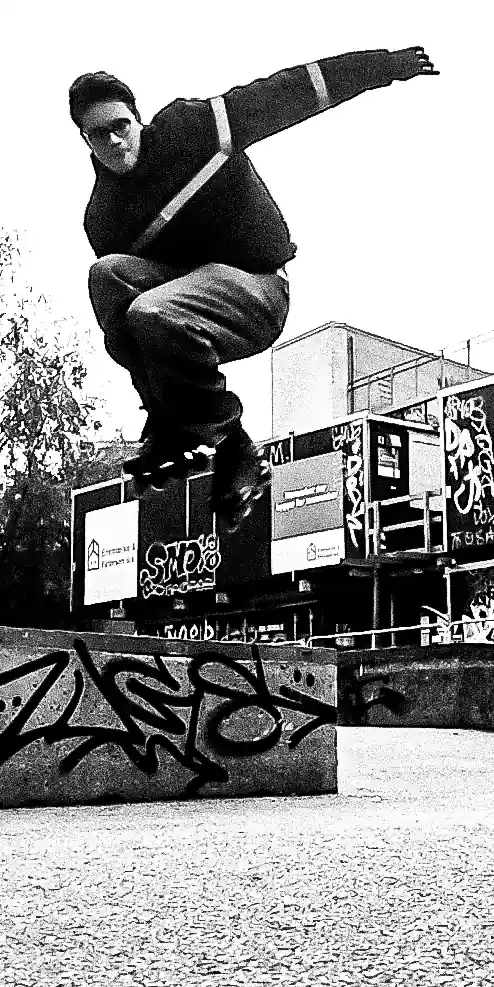
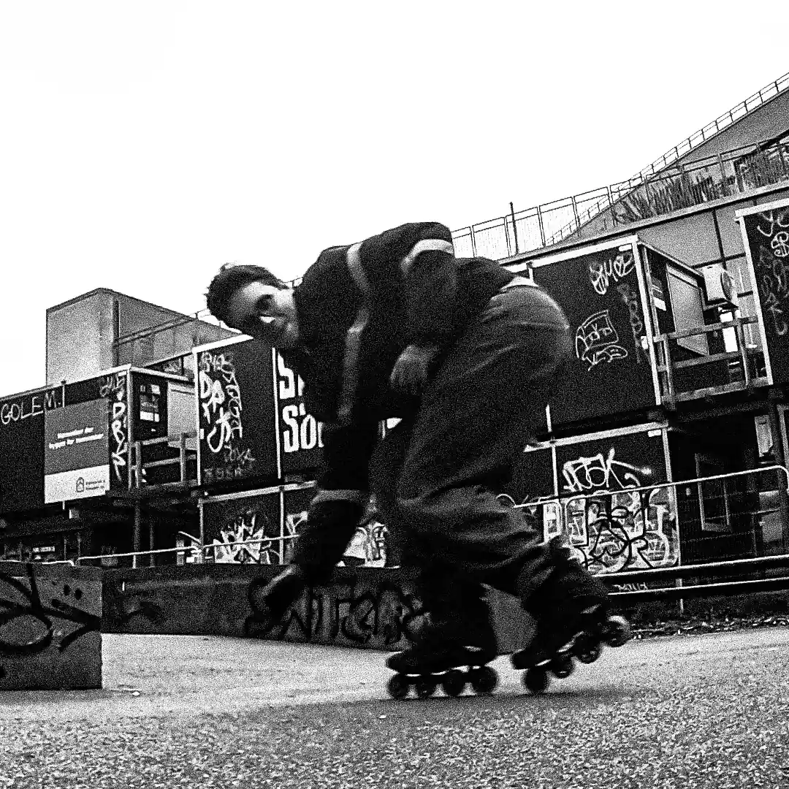
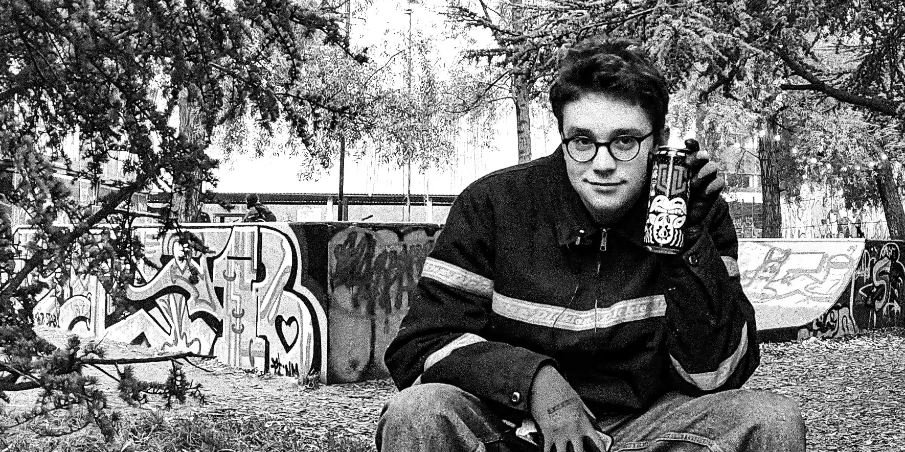
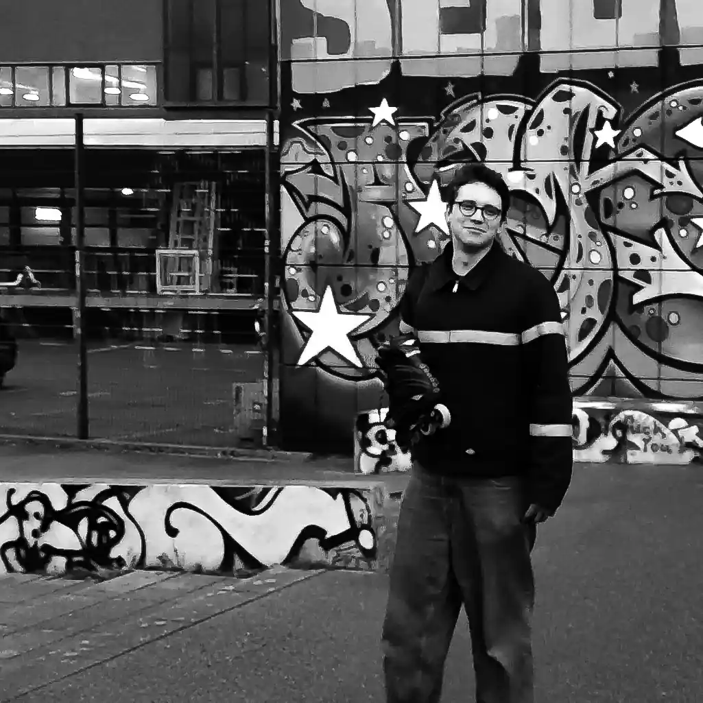
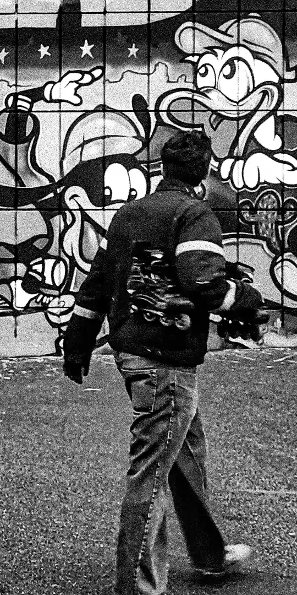

Rulleskøjter
>     Hjalte deler sin passion for rulleskøjter
Hjalte Jorsal har stået på rulleskøjter i 20 år; startede med sit allerførste par rulleskøjter som 1-årig. Han deler sin interesse for at rulleskøjte med os, der udforsker Nørrebro SkatePark, på trods af det grå vejr. Han fortæller, hvordan han er gået i sin fars fodspor, der drev en rulleskøjteskole i København i 90'erne. Hjalte nyder den sociale side af rulleskøjter, at stå på skøjter med sine venner i skateparker, lære og dele tricks, men han forklarer også, at han er begyndt at sætte pris på sine solo-ture rundt i København. Da han for nyligt er flyttet til byen, føler han, at rulleskøjter er en fantastisk måde at opleve København på og udforske steder, han ikke ellers havde tænkt sig at besøge.
Se videoen herunder for at høre mere om Hjaltes passion for rulleskøjter.